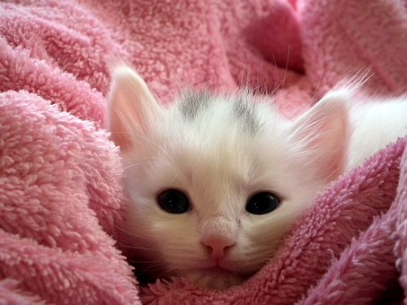
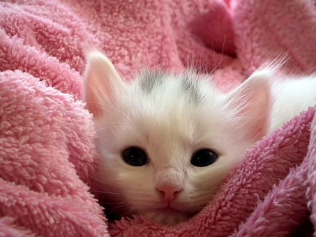

Durham house of Pets( DHP) began in 2000 by Arina Niu. She like the animal very much. At first, Arina has been taking care of more than 150 stray dogs and cats at her shelter home. She just wants to give a warm room for the stray animals. However, with the number of the dogs and cats increase and the payment of rising those animals was also increasing. At last, in the 2000, she decided to make the trade of selling the dogs and cats. One way of her getting the dogs and cats is the customer can sell the dogs and cats for her company. The other way is she still collect the stray dogs and cats, and also selling them to the people who like them. In the 2006, the DHP company also do some selling activities about dogs and cats. For example, if the customers buy the dogs or cats, the company will give some free dress for dogs and cats, and this selling behavior attract lot of customers. Therefore, in the 2008, the DHP company also do the business of selling the dress and food of the pets. Additionally, one of Arina’s friends like the snake very much. So he introduces the business of selling the pets of snake to the DHP company. In the 2011, the DHP company also selling the pet snake in their company. This company has two stores, one is located in Portsmouth of New Hampshire, the other one is located in Manchester of New Hampshire.
First, if the customers buy the stray dogs or cats, not only we will offer a lower price, but also this behavior show that these group of customers is saving a life. Second, we guarantee all of the animals that sold by our company is healthy, and also we have a great customer service for our customers. If they have any questions about the animals, they are free to ask. Third, we also have a professional team to dress up your animals. Fourth, we will give the customers who always come to our store a membership card. If you become of member of our store, not only you can participate in some selling activity, but also you can join the “loving animals” club every month to having a chatting with the people who loves the animal.
 
